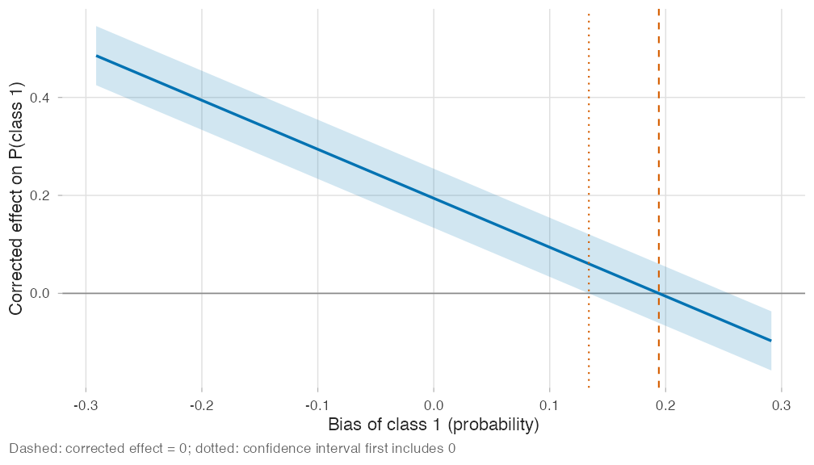
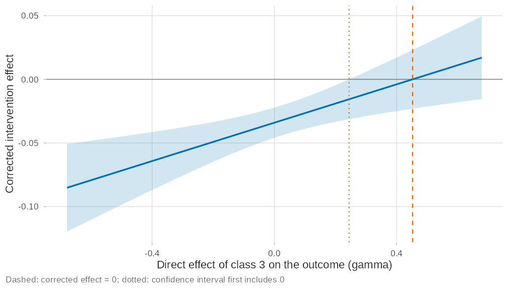
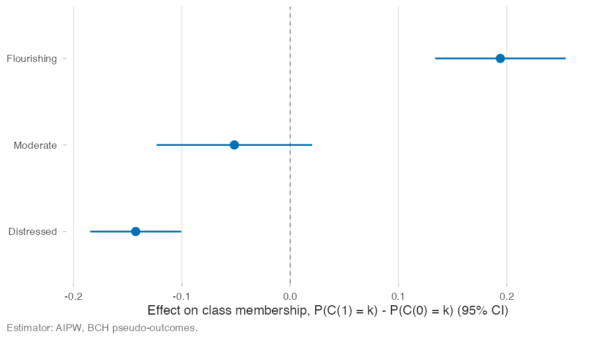
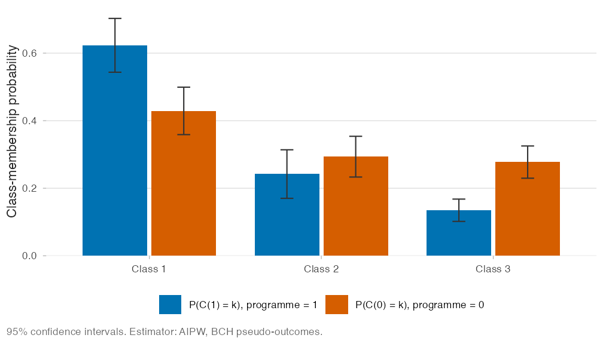
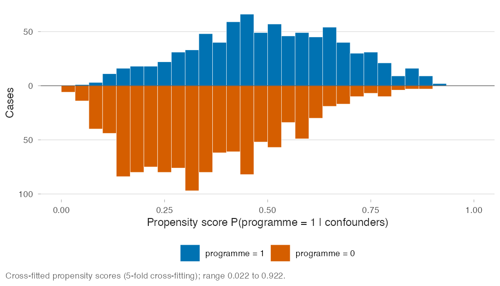
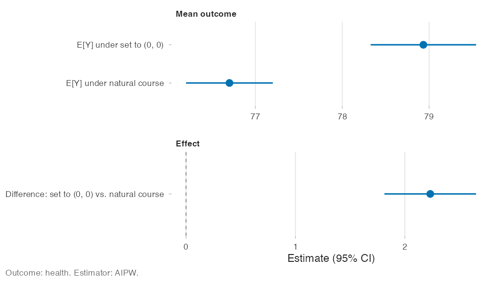
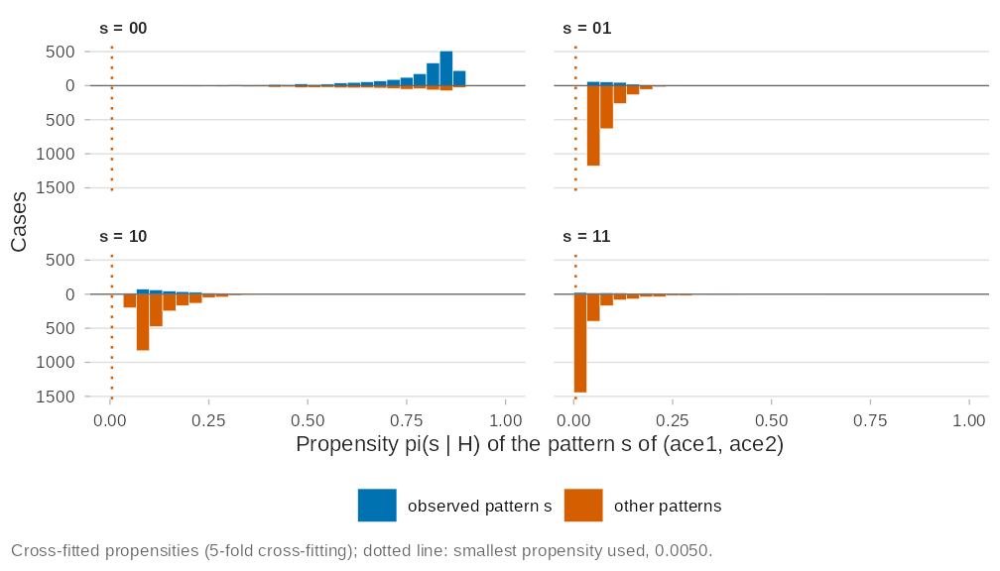
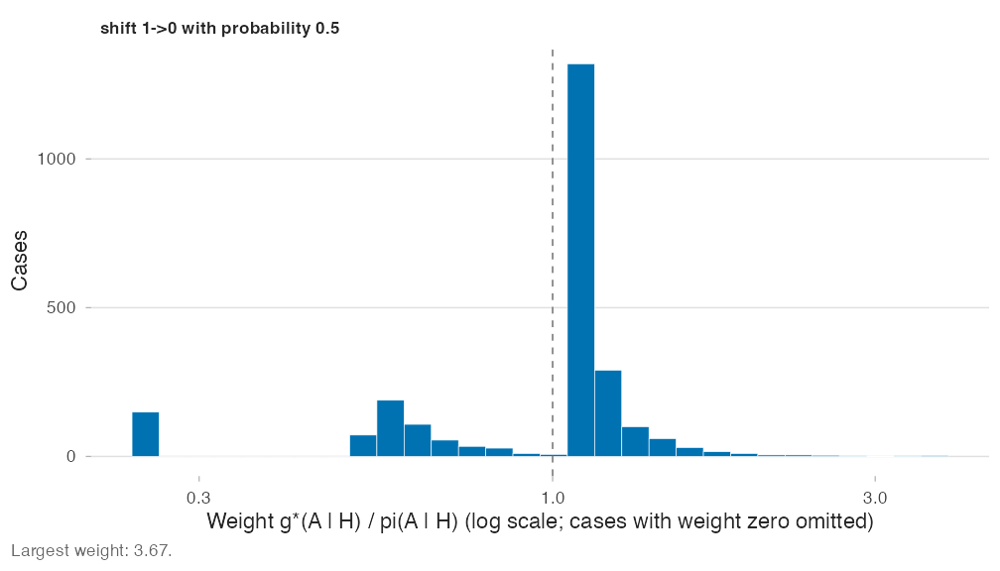
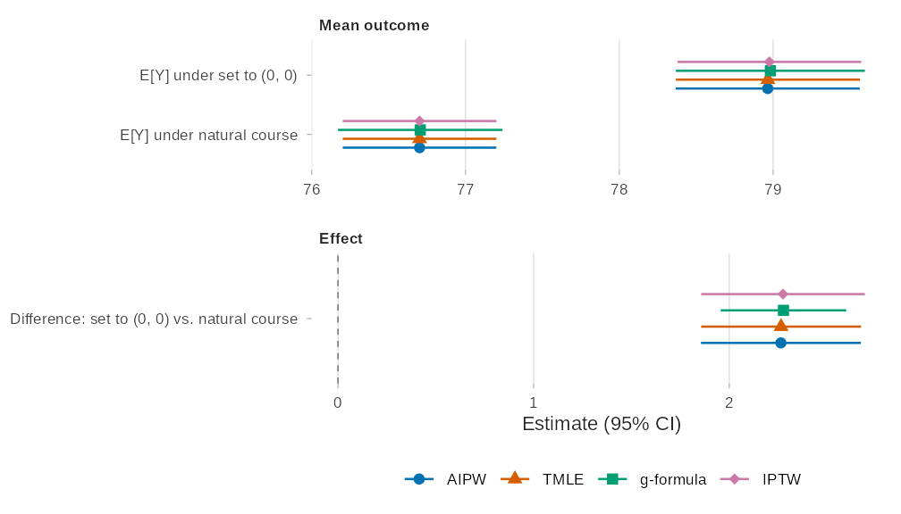
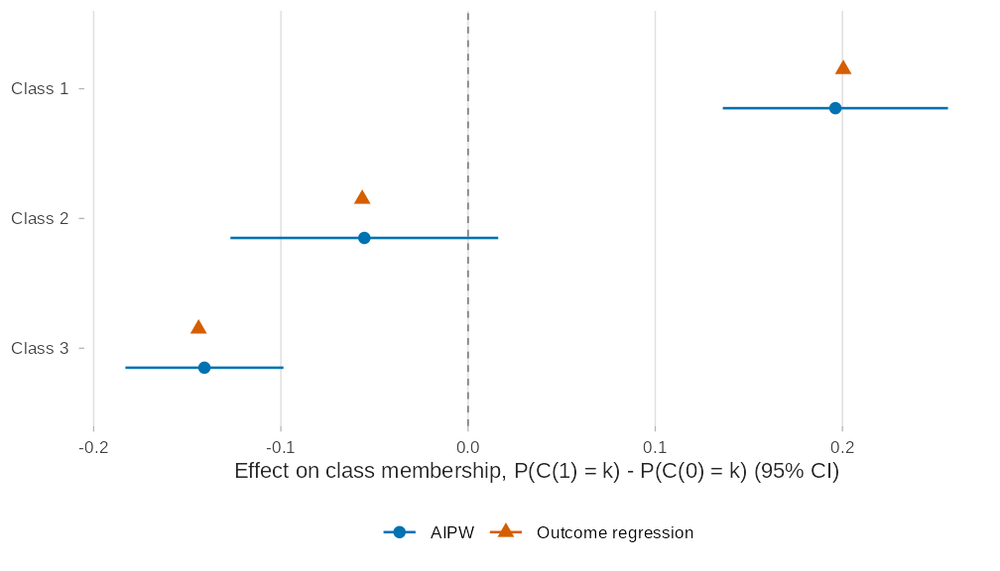

Causal effects on latent classes and interventions on indicators
latentclasscausal.Rmdlatentclasscausal answers causal questions about latent classes:
| question | function | the latent classes are |
|---|---|---|
| Does a treatment change who belongs to which class? | intervene_membership() |
the outcome |
| Does an intervention on exposures change membership in a latent class outcome? | intervene_latent_outcome() |
the outcome |
| For whom: how large is an intervention’s effect within each latent class? | intervene_within() |
formed by the exposures |
| Could the latent class itself confound the effect? | intervene_latent_sensitivity() |
formed by the exposures |
| Unmeasured confounding of treatment and class membership: how strong would it have to be? |
intervene_membership_sensitivity() (E-values, additive
bias) |
the outcome |
| Measurement non-invariance by treatment (DIF)? | intervene_dif() |
the outcome |
| Adjust for the latent pattern of the other exposures | intervene_effect(adjust = "classes") |
formed by the other exposures |
| How would the class model classify post-intervention profiles? (descriptive) | intervene_shares() |
formed by the exposures |
Section 1 covers treatment effects on class membership. Section 2
covers interventions on exposures that form latent classes: 2.1
introduces the intervention estimators the latent-class methods are
built on (intervene_effect(): g-formula, IPTW, AIPW, TMLE),
and 2.2 the latent-class methods themselves.
Both run in Julia (LatentClassCausal.jl), in the Julia session that latentmixtures manages. Install the Julia packages once:
latentmixtures::install_julia_packages(causal_url = "https://github.com/williamlorder/LatentClassCausal.jl")
# or from local copies:
# latentmixtures::install_julia_packages(path = "path/to/LatentMixtures.jl",
# causal_path = "path/to/LatentClassCausal.jl")
library(latentmixtures)
library(latentclasscausal)
latentmixtures::lm_start(threads = 4) # optional; started automatically otherwise#> Starting Julia ...#> Julia 1.12.5 started with 4 threads; LatentMixtures.jl loaded.The examples use the two simulated datasets of the package, whose
true effects are known (?programme,
?ace_study).
programme: 2,000 students, eight binary wellbeing items
six months after a school-based mental-health promotion programme
(low_mood, worry, sleep,
lonely, hopeless, enjoy,
confident, friends), participation
(programme, 0/1) and five baseline confounders
(female, age, low_ses,
distress, belonging). The items measure three
latent classes — Flourishing, Moderate, Distressed. Schools offered the
programme mainly to distressed, poorly connected students, so
participation is confounded by indication:
#> programme distress belonging
#> 1 0 -0.2946344 0.1428061
#> 2 1 0.4214927 -0.22815531. Effect of a treatment on latent class membership
Estimation
intervene_membership() starts from a measurement model
fitted without covariates to the same rows. It corrects
for classification error with BCH pseudo-outcomes: if
is the modal class and
the classification-error matrix of the measurement model, then
has conditional mean
(Bolck, Croon and Hagenaars 2004; Vermunt 2010). The default estimator
is augmented inverse probability weighting (Bang and Robins 2005) of
these pseudo-outcomes, with a propensity model and a latent class
regression as working models and 5-fold cross-fitting. Standard errors
come from the influence function of the stacked estimating equations, so
they include the uncertainty of the measurement model.
Does the programme move students into the Flourishing class?
m <- programme |> lca(low_mood:friends, K = 3) # measurement model: items only
convergence(m) # check that the best LL is replicated and EM reached the maximum#> Convergence check: ✓ no problems found
#> best start converged yes (240 EM iterations)
#> stage-2 starts converged 20 / 20
#> best LL replicated 20 times
#> LL at EM / after Newton -7785.7692 / -7785.7692 (gain 0.0e+00; max |gradient| 3.2e-12)
#> smallest class 0.204
#> · EM converged; 2 Newton steps (polish = true) raised the log-likelihood by 3.0e-06 (max |gradient| 4.6e-03 → 3.2e-12); the reported solution is the Newton one
m # 1 Flourishing, 2 Moderate, 3 Distressed#> ━━ Latent class analysis ━━━━━━━━━━━━━━━━━━━━━━━━━━━━━━━━━━━━━━━━━━━━━━━━━━━━━━━
#> 3 classes, 8 indicators, n = 2000
#> Random starts: 100 / 20; best LL replicated 20 times
#>
#> ── Fit ─────────────────────────────────────────────────────────────────────────
#> Log-likelihood -7785.769 AIC 15623.538
#> Free parameters 26 BIC 15769.162
#> Observations 2000 Sample-size adj. BIC 15686.559
#> Best LL replicated 20 / 20 Entropy 0.666
#> Smallest class 20.4%
#>
#> ── Class sizes ─────────────────────────────────────────────────────────────────
#> Class Proportion Modal n Avg. posterior
#> ──────────────────────────────────────────
#> 1 0.520 1095 0.881
#> 2 0.276 504 0.751
#> 3 0.204 401 0.889
#>
#> ── Item-response probabilities ─────────────────────────────────────────────────
#> Item = category Class 1 Class 2 Class 3
#> ──────────────────────────────────────────
#> low_mood = 0 0.950 0.698 0.138
#> low_mood = 1 0.050 0.302 0.862
#> worry = 0 0.871 0.559 0.166
#> worry = 1 0.129 0.441 0.834
#> sleep = 0 0.903 0.696 0.317
#> sleep = 1 0.097 0.304 0.683
#> lonely = 0 0.956 0.671 0.323
#> lonely = 1 0.044 0.329 0.677
#> hopeless = 0 0.978 0.899 0.445
#> hopeless = 1 0.022 0.101 0.555
#> enjoy = 0 0.029 0.364 0.745
#> enjoy = 1 0.971 0.636 0.255
#> confident = 0 0.087 0.489 0.853
#> confident = 1 0.913 0.511 0.147
#> friends = 0 0.098 0.280 0.614
#> friends = 1 0.902 0.720 0.386
#>
#> summary() for standard errors · lm_table() to export · classify() for posteriors
r <- intervene_membership(m, programme, treatment = programme,
confounders = c(female, age, low_ses, distress, belonging))
r#> ▸ Causal effect of a treatment on latent class membership
#> AIPW, BCH pseudo-outcomes, 5-fold cross-fitting; N = 2000, K = 3
#> Treatment: programme
#> Confounders: female, age, low_ses, distress, belonging
#>
#> ─────────────────────────────────────────────────────────────────
#> P(C¹=k) P(C⁰=k) Δ SE 95% CI p
#> ─────────────────────────────────────────────────────────────────
#> Class 1 0.626 0.430 0.196 0.031 [0.136, 0.256] <.001
#> Class 2 0.238 0.293 −0.055 0.036 [−0.127, 0.016] .129
#> Class 3 0.136 0.277 −0.141 0.022 [−0.183, −0.099] <.001
#> ─────────────────────────────────────────────────────────────────
#>
#> Δ = P(C¹=k) − P(C⁰=k); SE from the influence function incl. the measurement model.
#> Diagnostics: entropy = 0.666, propensity range [0.019, 0.923]
tidy(r) # Delta_k, P(C(1) = k), P(C(0) = k) with SEs and CIs#> term class estimate std.error statistic p.value conf.low
#> 1 Class 1 1 0.19623314 0.03068359 6.395377 1.601515e-10 0.1360944
#> 2 Class 2 2 -0.05540049 0.03649414 -1.518065 1.289980e-01 -0.1269277
#> 3 Class 3 3 -0.14083265 0.02153219 -6.540563 6.128785e-11 -0.1830350
#> conf.high psi1 psi1.std.error psi0 psi0.std.error
#> 1 0.25637188 0.6263778 0.04041572 0.4301447 0.03583990
#> 2 0.01612672 0.2379277 0.03644535 0.2933282 0.03081426
#> 3 -0.09863033 0.1356945 0.01681772 0.2765271 0.02444146
tidy(r, se = "fixed") # measurement model treated as known#> term class estimate std.error statistic p.value conf.low
#> 1 Class 1 1 0.19623314 0.03054539 6.424314 1.324655e-10 0.1363653
#> 2 Class 2 2 -0.05540049 0.03569695 -1.551967 1.206702e-01 -0.1253652
#> 3 Class 3 3 -0.14083265 0.02056606 -6.847819 7.498423e-12 -0.1811414
#> conf.high psi1 psi1.std.error psi0 psi0.std.error
#> 1 0.25610100 0.6263778 0.04041572 0.4301447 0.03583990
#> 2 0.01456426 0.2379277 0.03644535 0.2933282 0.03081426
#> 3 -0.10052392 0.1356945 0.01681772 0.2765271 0.02444146
glance(r) # entropy, propensity and pseudo-outcome ranges#> nobs K estimator folds treatment n_confounders entropy propensity.min
#> 1 2000 3 aipw 5 programme 5 0.665586 0.01904342
#> propensity.max pseudo.min pseudo.max
#> 1 0.9228678 -0.3859328 1.526334The true effects are +0.179 (Flourishing), -0.059 (Moderate) and -0.120 (Distressed): the programme raises the share of flourishing students by about 18 percentage points and lowers the share of distressed students by 12. The estimates are within about one standard error of these values.
The data frame must have the same rows, in the same order, as the data the measurement model was fitted to. Treatment and confounders must be observed on every analysed row; factor confounders are dummy-coded.
Other estimators are available for comparison: "ipw_bch"
(IPW of the pseudo-outcomes, needs a correct propensity model),
"or" (g-computation with the three-step ML latent class
regression, needs a correct class regression), and
"ipw_modal", "aipw_posterior",
"naive", which treat the modal class or the posterior
probabilities as if they were the true class and are biased by
classification error. Richer working models add squares, products and
treatment-by-covariate interactions:
conf <- c("female", "age", "low_ses", "distress", "belonging")
r_q <- intervene_membership(m, programme, treatment = programme, confounders = all_of(conf),
propensity_model = "quadratic", outcome_model = "quadratic")
r_or <- intervene_membership(m, programme, treatment = programme, confounders = all_of(conf),
estimator = "or")
r_nv <- intervene_membership(m, programme, treatment = programme, estimator = "naive")
causal_table(AIPW = r, `AIPW (quadratic)` = r_q, `Outcome regression` = r_or,
Unadjusted = r_nv)───────────────────────────────────────────────────────────────────────
AIPW AIPW (quadratic) Outcome regression Unadjusted
───────────────────────────────────────────────────────────────────────
Δ Class 1 0.196*** 0.195*** 0.200 0.022
(0.031) (0.032) (—) (—)
Δ Class 2 −0.055 −0.054 −0.057 −0.020
(0.036) (0.039) (—) (—)
Δ Class 3 −0.141*** −0.141*** −0.144 −0.003
(0.022) (0.023) (—) (—)
N 2000 2000 2000 2000
Estimator AIPW (BCH) AIPW (BCH) OR (3-step ML) Unadjusted Treatment
programme programme programme programme Entropy 0.666 0.666 0.666
0.666
───────────────────────────────────────────────────────────────────────
* p < .05, ** p < .01, *** p < .001; Standard errors in
parentheses.
The unadjusted comparison is close to zero: participants were more distressed to begin with, which hides the benefit of the programme.
Assumptions
- Consistency: .
-
Positivity:
.
Check
glance(r)$propensity.minandpropensity.max;trimtruncates extreme propensity scores. - No unmeasured confounding: .
- A valid and invariant measurement model: the latent class model holds and the indicators depend on treatment and confounders only through the class, (no differential item functioning).
- Identifiability: the measurement model is identified and is invertible (classes must be distinguishable; low entropy makes nearly singular and the estimates noisy).
The estimator is doubly robust with respect to the propensity model
and the latent class regression (assumptions 1–5 and either working
model correct). It is not robust to a violation of
assumption 4: if the treatment changes how people answer the indicators
within a class, the pseudo-outcomes are biased and no choice of working
models repairs this. Check measurement invariance across treatment
groups first, for example with a multigroup model and
compare_models():
inv <- programme |> lca(low_mood:friends, K = 3, group = programme)
free <- programme |> lca(low_mood:friends, K = 3, group = programme, invariance = "none")
compare_models(inv, free) # large p: the items work the same in both groups#> ━━ Nested model comparison ━━━━━━━━━━━━━━━━━━━━━━━━━━━━━━━━━━━━━━━━━━━━━━━━━━━━━
#> inv (M0) nested in free (M1)
#>
#> ──────────────────────────────────
#> Model LL Par. Scaling
#> ──────────────────────────────────
#> M0: inv -9140.543 29 1.0139
#> M1: free -9128.635 53 1.0279
#> ──────────────────────────────────
#>
#> ── Difference tests ────────────────────────────────────────────────────────────
#> ──────────────────────────────────────────────────────────
#> Test Chi-square df p
#> ──────────────────────────────────────────────────────────
#> Likelihood ratio (naive, ML) 23.815 24 0.472
#> Satorra-Bentler (2001) scaled (MLR) 22.794 24 0.532
#> ──────────────────────────────────────────────────────────
#> Scaling correction of the difference cd = 1.0448
#> ΔAIC = 24.185, ΔBIC = 158.606, ΔsaBIC = 82.357 (M1 - M0)Invariance is needed with respect to the confounders as well, which this check does not cover.
Sensitivity analyses
Two assumptions above cannot be tested from the data alone.
intervene_dif() is the DIF check of assumption 4 in one
step: it fits the invariant and the treatment-specific measurement
models, tests them, and shows how
changes when the classification errors are allowed to differ between
treated and untreated. intervene_membership_sensitivity()
addresses assumption 3 (unmeasured confounding): E-values for the causal
risk ratio
(VanderWeele & Ding 2017) and the tipping points of an additive bias
model whose biases sum to zero over classes.
s1 <- intervene_membership_sensitivity(m, programme, treatment = programme,
confounders = c(female, age, low_ses, distress, belonging), target = 1)
s1#> ▸ Sensitivity of treatment effects on latent classes to unmeasured confounding
#> N = 2000, K = 3
#>
#> ───────────────────────────────────────────────────────────────────────────────────────────────
#> Δ bias corrected 95% CI tip (=0) tip (CI) RR E-value E (CI)
#> ───────────────────────────────────────────────────────────────────────────────────────────────
#> Class 1 0.196 0.000 0.196 [0.136, 0.256] 0.196 0.136 1.456 2.27 1.90
#> Class 2 −0.055 0.000 −0.055 [−0.127, 0.016] −0.055 0.000 0.811 1.77 1.00
#> Class 3 −0.141 0.000 −0.141 [−0.183, −0.099] −0.141 −0.099 0.491 3.49 2.67
#> ───────────────────────────────────────────────────────────────────────────────────────────────
#>
#> Estimate -> Delta_k + bias_k with sum_k bias_k = 0 (probability units).
#> E-values (VanderWeele & Ding 2017) for P(C(1)=k)/P(C(0)=k) given the confounders.
autoplot(s1)
d1 <- intervene_dif(m, programme, indicators = low_mood:friends, treatment = programme,
confounders = c(female, age, low_ses, distress, belonging))
d1#> ▸ Differential item functioning by treatment (programme)
#> Scaled chi-square difference test, full vs non-invariant measurement: chi2(24) = 22.79, p = .532
#>
#> ──────────────────────────────────────────────────────────────────
#> Delta (invariant) SE Delta (non-inv.) SE change
#> ──────────────────────────────────────────────────────────────────
#> Class 1 0.196 0.031 0.134 0.032 −0.062
#> Class 2 −0.055 0.036 −0.021 0.037 0.034
#> Class 3 −0.141 0.022 −0.113 0.022 0.028
#> ──────────────────────────────────────────────────────────────────
#>
#> No significant DIF: the change column is noise around zero.For interventions on exposures, the corresponding check is
intervene_latent_sensitivity() (section 2.2): how strong a
direct effect of the latent class of the exposures would have to be to
explain the effect away.
2. Interventions on exposures that form latent classes
The exposures here, eight childhood adversities, co-occur in latent patterns. The questions of interest are about those patterns (2.2); they rest on estimators of interventions on the observed exposures, introduced first (2.1).
2.1 The building block: interventions on indicators
(intervene_effect())
Estimand
For a set of binary exposures (for example some of the items of a childhood adversity class model) and interventions , ,
The intervention is defined on the observed exposures, never by moving people between latent classes. Three kinds are available:
-
setto(c(0, 0)): a static intervention that sets the intervened exposures to the given values for everyone; -
shift(delta): a stochastic intervention (modified treatment policy; Haneuse and Rotnitzky 2013; Díaz et al. 2023) that moves each intervened exposure from 1 to 0 with probabilitydelta(shift(0.5)halves its prevalence,shift(1)removes it); -
natural(): the natural course, the default comparisong0.
ace_study: 2,500 adults with eight adverse childhood
experiences (ace1 abuse, ace2 neglect,
ace3 sexual abuse, ace4 domestic violence,
ace5 household substance misuse, ace6
household mental illness, ace7 parental separation,
ace8 an incarcerated household member), confounders
(age, female, parent_edu, the
parents’ years of education) and two outcomes: self-rated health today
(health, 0–100) and past-year depression
(depressed, 0/1). A latent family context generates the
ACEs; the outcomes depend on abuse, neglect, household mental illness
and the confounders.
Would preventing childhood abuse and neglect improve adult health?
data(ace_study)
ie <- ace_study |>
intervene_effect(outcome = health, exposures = ace1:ace8,
intervene = c(ace1, ace2), confounders = c(age, female, parent_edu),
g1 = setto(c(0, 0)))
ie # psi ≈ +2.26 points (true +2.00)#> ▸ Effect of a hypothetical intervention on exposures
#> AIPW, 5-fold cross-fitting, gaussian outcome; N = 2500
#> Outcome: health
#> Intervene: ace1, ace2
#> Adjusted for: ace3, ace4, ace5, ace6, ace7, ace8, age, female, parent_edu
#> g1: set to (0, 0)
#> g0: natural course
#>
#> ─────────────────────────────────────────────────────────────
#> Estimate SE 95% CI p
#> ─────────────────────────────────────────────────────────────
#> E[Yᵍ¹] 78.965 0.305 [78.367, 79.563]
#> E[Yᵍ⁰] 76.701 0.255 [76.202, 77.201]
#> ─────────────────────────────────────────────────────────────
#> ψ = E[Yᵍ¹] − E[Yᵍ⁰] 2.264 0.208 [1.855, 2.673] <.001
#> ─────────────────────────────────────────────────────────────
#>
#> Overlap: min P(A_S = s | H) = 0.0050, max weight = 10.1
#> ⚠ near-violation of positivity: some post-intervention profiles are rare
tidy(ie)#> term intervention estimate std.error statistic
#> 1 psi1 set to (0, 0) 78.965074 0.3051997 NA
#> 2 psi0 natural course 76.701200 0.2548355 NA
#> 3 effect set to (0, 0) vs natural course 2.263874 0.2084955 10.85815
#> p.value conf.low conf.high
#> 1 NA 78.366894 79.563255
#> 2 NA 76.201732 77.200668
#> 3 1.824135e-27 1.855231 2.672518
glance(ie) # min_pi, max_weight: positivity diagnostics#> nobs n_dropped estimator family folds outcome intervene g1
#> 1 2500 0 aipw gaussian 5 health ace1, ace2 set to (0, 0)
#> g0 min_pi max_weight
#> 1 natural course 0.005046343 10.08433Estimators
estimator |
method | standard error |
|---|---|---|
"gformula" |
parametric g-formula (Robins 1986) | bootstrap (B) |
"ipw" |
Hájek-normalised IPTW (stochastic interventions: Muñoz and van der Laan 2012) | influence function |
"aipw" (default) |
augmented IPW (Bang and Robins 2005; stochastic interventions: Muñoz and van der Laan 2012; Díaz et al. 2023) | influence function |
"tmle" |
targeted maximum likelihood (van der Laan and Rose 2011; stochastic interventions: Muñoz and van der Laan 2012) | efficient influence function |
AIPW and TMLE are doubly robust: consistent if either the outcome
model or the exposure model is correct. TMLE also respects the bounds of
a binary outcome (family = "binomial", where
is a risk difference). The exposure model is a chain of logistic
regressions for the intervened exposures given the other exposures and
the confounders; nuisance models are cross-fitted.
ie_fit <- function(...) {
intervene_effect(ace_study, outcome = health, exposures = ace1:ace8,
intervene = c(ace1, ace2), confounders = c(age, female, parent_edu), ...)
}
ie_tmle <- ie_fit(g1 = setto(c(0, 0)), estimator = "tmle")
ie_gf <- ie_fit(g1 = setto(c(0, 0)), estimator = "gformula", B = 200)
ie_shift <- ie_fit(g1 = shift(0.5)) # halve abuse and neglect: true psi +1.04
causal_table(AIPW = ie, TMLE = ie_tmle, `g-formula` = ie_gf, `Halve prevalence` = ie_shift,
format = "markdown")| AIPW | TMLE | g-formula | Halve prevalence | |
|---|---|---|---|---|
| E[Y^g1] | 78.965 | 78.966 | 78.982 | 77.864 |
| (0.305) | (0.305) | (0.313) | (0.256) | |
| E[Y^g0] | 76.701 | 76.701 | 76.705 | 76.701 |
| (0.255) | (0.255) | (0.273) | (0.255) | |
| Effect ψ | 2.264*** | 2.265*** | 2.277*** | 1.163*** |
| (0.208) | (0.209) | (0.164) | (0.094) | |
| N | 2500 | 2500 | 2500 | 2500 |
| Estimator | AIPW | TMLE | parametric g-formula | AIPW |
| Intervene | ace1, ace2 | ace1, ace2 | ace1, ace2 | ace1, ace2 |
| g1 | set to (0, 0) | set to (0, 0) | set to (0, 0) | shift 1→0 with probability 0.5 |
| g0 | natural course | natural course | natural course | natural course |
| Min. propensity | 0.0050 | 0.0050 | 0.0050 | 0.0050 |
* p < .05, ** p < .01, *** p < .001; Standard errors in parentheses.
For the binary outcome, is a risk difference:
ie_dep <- ace_study |>
intervene_effect(outcome = depressed, exposures = ace1:ace8,
intervene = c(ace1, ace2), confounders = c(age, female, parent_edu),
g1 = setto(c(0, 0)), family = "binomial", estimator = "tmle")
ie_dep # psi ≈ -0.0345: 3.4 percentage points less depression (true -0.038)#> ▸ Effect of a hypothetical intervention on exposures
#> TMLE, 5-fold cross-fitting, binomial outcome; N = 2500
#> Outcome: depressed
#> Intervene: ace1, ace2
#> Adjusted for: ace3, ace4, ace5, ace6, ace7, ace8, age, female, parent_edu
#> g1: set to (0, 0)
#> g0: natural course
#>
#> ─────────────────────────────────────────────────────────────
#> Estimate SE 95% CI p
#> ─────────────────────────────────────────────────────────────
#> E[Yᵍ¹] 0.129 0.009 [0.111, 0.146]
#> E[Yᵍ⁰] 0.163 0.007 [0.149, 0.178]
#> ─────────────────────────────────────────────────────────────
#> ψ = E[Yᵍ¹] − E[Yᵍ⁰] −0.035 0.006 [−0.047, −0.022] <.001
#> ─────────────────────────────────────────────────────────────
#>
#> Overlap: min P(A_S = s | H) = 0.0050, max weight = 10.1
#> ⚠ near-violation of positivity: some post-intervention profiles are rareCustom and targeted interventions
intervention() defines any rule for the intervened
exposures, for example preventing abuse while leaving neglect at its
natural value; subgroup() applies an intervention only
where a condition holds, for example to children of parents with at most
ten years of education (28% of the sample):
abuse_only <- intervention(function(s, a) as.numeric(all(s == c(0, a[2]))),
label = "prevent abuse only")
ie_abuse <- ie_fit(g1 = abuse_only)
ie_target <- ie_fit(g1 = subgroup(setto(c(0, 0)), parent_edu <= 10))
causal_table(`Prevent both` = ie, `Prevent abuse only` = ie_abuse,
`Prevent both, low parental education` = ie_target, format = "markdown")| Prevent both | Prevent abuse only | Prevent both, low parental education | |
|---|---|---|---|
| E[Y^g1] | 78.965 | 78.095 | 77.561 |
| (0.305) | (0.270) | (0.274) | |
| E[Y^g0] | 76.701 | 76.701 | 76.701 |
| (0.255) | (0.255) | (0.255) | |
| Effect ψ | 2.264*** | 1.394*** | 0.860*** |
| (0.208) | (0.141) | (0.126) | |
| N | 2500 | 2500 | 2500 |
| Estimator | AIPW | AIPW | AIPW |
| Intervene | ace1, ace2 | ace1, ace2 | ace1, ace2 |
| g1 | set to (0, 0) | prevent abuse only | set to (0, 0) if parent_edu <= 10 |
| g0 | natural course | natural course | natural course |
| Min. propensity | 0.0050 | 0.0050 | 0.0050 |
* p < .05, ** p < .01, *** p < .001; Standard errors in parentheses.
Preventing abuse alone yields about 60% of the gain of preventing both (≈ +1.39 vs ≈ +2.26); targeting the 28% of families with low parental education yields about 40% of it (≈ +0.86), because adversity is concentrated there.
Rows with missing outcome, exposures or confounders are dropped with
a message. For vectors and matrices use
intervention_effect_matrix().
Assumptions
- Consistency.
- Conditional exchangeability of the intervened exposures given the other exposures and the confounders, .
-
Positivity of the exposure profiles the
intervention moves people to. A small
min_pior a largemax_weightsignals near-violations; the printout warns whenmin_pi < 0.01. Stochastic shifts usually need weaker positivity than static interventions. - No effect of the intervened exposures on the other exposures in ; otherwise those are mediators and adjusting for them changes the estimand.
Assumption 2 deserves particular attention in latent class applications. If a latent variable that generates the exposures, for example a family context behind the adversity classes, also affects the outcome directly, then adjusting for the other indicators is only proxy adjustment for it: the estimate is biased, and double robustness does not help, because the problem is confounding rather than model misspecification.
2.2 Latent classes and interventions: what these methods answer
Adversities co-occur in patterns, and the patterns are usually read
as a latent family context (latent class analysis of ACEs). Section 2.1
intervenes on single adversities and adjusts for the others; the five
functions below bring the latent classes back in, each for a different
research question. The running example is the effect on adult depression
of preventing abuse and neglect (ace1, ace2)
in ace_study.
| function | research question | status |
|---|---|---|
intervene_latent_outcome() |
does the intervention change membership in a latent class outcome (e.g. adult health-behaviour classes)? | Experimental (established components — BCH, AIPW for modified treatment policies — in a new combination) |
intervene_within() |
for whom: how large is the effect within each adversity class? | Experimental (established components — posterior weighting, AIPW — in a new combination) |
intervene_latent_sensitivity() |
how strong would a direct effect of the family context have to be to explain the effect away? | Experimental (new bias formula built on the classification shares) |
intervene_effect(adjust = "classes") |
adjust for the pattern of the other adversities instead of each one (positivity) | Experimental (established idea — adjusting for a balancing summary — new use with LCA) |
intervene_shares() |
how would an LCA classify the post-intervention adversity profiles? | Experimental (descriptive; not a causal effect on the latent class) |
Heterogeneity: intervene_within(). Is
preventing abuse and neglect worth more for people from high-adversity
families? The classes come from an LCA of all eight adversities with the
confounders as covariates; the effect is weighted by each person’s
posterior class probability. It assumes the class has no effect on
depression beyond the adversities and confounders. Standard errors come
from a bootstrap that refits the class model and the nuisance models
(B = 200 by default, in parallel over the Julia threads;
100 here to keep the vignette fast);
lca_uncertainty = "none" gives faster conditional standard
errors that are too small, and the printout says so.
ce <- intervene_within(ace_study, outcome = depressed, exposures = ace1:ace8, intervene = c(ace1, ace2),
confounders = c(age, female, parent_edu), g1 = setto(c(0, 0)), K = 3,
family = "binomial", B = 100)#> class-model bootstrap: 100 replicates on 4 thread(s)…
#> bootstrap 10/100 (10%), about 61 s left
#> bootstrap 20/100 (20%), about 49 s left
#> bootstrap 30/100 (30%), about 39 s left
#> bootstrap 40/100 (40%), about 34 s left
#> bootstrap 50/100 (50%), about 31 s left
#> bootstrap 60/100 (60%), about 23 s left
#> bootstrap 70/100 (70%), about 17 s left
#> bootstrap 80/100 (80%), about 12 s left
#> bootstrap 90/100 (90%), about 6 s left
#> bootstrap 100/100 (100%), done in 62 s
ce#> ▸ Class-specific effects of a hypothetical intervention on exposures
#> g1: set to (0, 0)
#> g0: natural course
#> aipw; N = 2500, K = 3; outcome depressed
#>
#> ─────────────────────────────────────────────────────────────────────────────
#> P(C=k) E[Y^g1|k] E[Y^g0|k] psi_k SE 95% CI p
#> ─────────────────────────────────────────────────────────────────────────────
#> Class 1 0.674 0.120 0.129 −0.009 0.003 [−0.015, −0.002] .007
#> Class 2 0.230 0.153 0.188 −0.035 0.026 [−0.086, 0.015] .173
#> Class 3 0.096 0.136 0.345 −0.210 0.052 [−0.312, −0.108] <.001
#> ─────────────────────────────────────────────────────────────────────────────
#>
#> Population effect: −0.034 (SE 0.007); overlap: min pi = 0.0050, max weight = 10.1
#> Assumes no direct class effect on the outcome (Y^g independent of C given A, X).
#> SE: bootstrap (100 replicates)
round(ce$profile, 2) # P(adversity | class): which class is which#> [,1] [,2] [,3]
#> ace1 0.08 0.23 0.83
#> ace2 0.05 0.25 0.54
#> ace3 0.03 0.06 0.42
#> ace4 0.06 0.47 0.50
#> ace5 0.08 0.57 0.51
#> ace6 0.08 0.49 0.33
#> ace7 0.18 0.54 0.51
#> ace8 0.02 0.24 0.17Classification shares:
intervene_shares(). In the LCA the class generates
the adversities, so preventing two adversities does not move anybody to
another class. What changes is how the model would classify the
post-intervention profiles; the shift links the intervention to the LCA
literature (“fewer people would look like the high-adversity class”) and
is the input of the sensitivity analysis. The standard errors are
bootstrapped by default; conditional ones
(lca_uncertainty = "none") hold the class model fixed and
are far too small (coverage about 50% in the simulation).
sh <- intervene_shares(ace_study, exposures = ace1:ace8, intervene = c(ace1, ace2),
confounders = c(age, female, parent_edu), g1 = setto(c(0, 0)), K = 3, B = 100)#> class-model bootstrap: 100 replicates on 4 thread(s)…
#> bootstrap 10/100 (10%), about 63 s left
#> bootstrap 20/100 (20%), about 48 s left
#> bootstrap 30/100 (30%), about 44 s left
#> bootstrap 40/100 (40%), about 35 s left
#> bootstrap 50/100 (50%), about 29 s left
#> bootstrap 60/100 (60%), about 23 s left
#> bootstrap 70/100 (70%), about 16 s left
#> bootstrap 80/100 (80%), about 11 s left
#> bootstrap 90/100 (90%), about 6 s left
#> bootstrap 100/100 (100%), done in 58 s
sh#> ▸ Post-intervention classification shares (latent class model of all exposures)
#> g1: set to (0, 0)
#> g0: natural course
#> N = 2500, K = 3
#>
#> ──────────────────────────────────────────────────────────
#> pi_k^g1 pi_k^g0 Δ SE 95% CI
#> ──────────────────────────────────────────────────────────
#> Class 1 0.733 0.674 0.058 0.007 [0.045, 0.072]
#> Class 2 0.247 0.230 0.017 0.022 [−0.027, 0.061]
#> Class 3 0.020 0.096 −0.075 0.024 [−0.121, −0.029]
#> ──────────────────────────────────────────────────────────
#>
#> Shares of the model's classification of post-intervention profiles; not a causal effect
#> on the latent class (the class generates the exposures).
#> SE: bootstrap (100 replicates, class model refitted)Robustness:
intervene_latent_sensitivity(). If the family
context also raised the risk of depression directly, the effect of
preventing abuse and neglect would be confounded. With a direct effect
of one class (risk-difference scale), the bias is
with
the classification-share shifts; the tipping point is the
that would explain the effect away. The confidence band comes from a
joint bootstrap of the effect and the
(the default).
hi <- which.max(sh$pi0 - sh$pi1) # the class that loses most members
s <- intervene_latent_sensitivity(ace_study, outcome = depressed, exposures = ace1:ace8, intervene = c(ace1, ace2),
confounders = c(age, female, parent_edu), g1 = setto(c(0, 0)), K = 3,
target = hi, family = "binomial", B = 100)#> class-model bootstrap: 100 replicates on 4 thread(s)…
#> bootstrap 10/100 (10%), about 66 s left
#> bootstrap 20/100 (20%), about 49 s left
#> bootstrap 30/100 (30%), about 42 s left
#> bootstrap 40/100 (40%), about 37 s left
#> bootstrap 50/100 (50%), about 30 s left
#> bootstrap 60/100 (60%), about 24 s left
#> bootstrap 70/100 (70%), about 17 s left
#> bootstrap 80/100 (80%), about 12 s left
#> bootstrap 90/100 (90%), about 7 s left
#> bootstrap 100/100 (100%), done in 71 s
s#> ▸ Sensitivity of an intervention effect to a direct effect of the exposure class
#> g1: set to (0, 0)
#> g0: natural course
#> Uncorrected effect: −0.034 (SE 0.006); Δ_k = 0.058, 0.017, −0.075
#> Tipping points in gamma of class 3 vs the rest: effect = 0 at 0.452; 95% CI includes 0 from 0.244
#> bias = sum_k gamma_k Delta_k; gamma in outcome units (risk difference for a binary outcome).
#> SE: joint bootstrap of the effect and Delta (100 replicates)
autoplot(s)
Class-based adjustment:
adjust = "classes". With many adversities some
profiles are rare and the propensity of the intervened ones becomes
extreme. Adjusting for the latent classes of the other
adversities (never of the intervened ones) is a lower-dimensional
alternative, valid when the classes carry the confounding information of
the other adversities; "both" keeps the adversities as
well. Compare the estimates and min_pi.
f <- function(adjust) intervene_effect(ace_study, outcome = depressed, exposures = ace1:ace8,
intervene = c(ace1, ace2), confounders = c(age, female, parent_edu),
g1 = setto(c(0, 0)), family = "binomial", adjust = adjust, adjust_K = 3)
sapply(c("exposures", "classes", "both"), function(a) { r <- f(a); c(effect = r$effect, se = r$se, min_pi = r$min_pi) })#> exposures classes both
#> effect -0.034071026 -0.035215083 -0.035062699
#> se 0.006594700 0.005641716 0.005757146
#> min_pi 0.005046343 0.004797183 0.005955781Latent class outcome:
intervene_latent_outcome(). Does an intervention
change membership in a latent class outcome measured by several
indicators (e.g. adult health-behaviour classes)? The shipped ACE data
have no multi-indicator adult outcome, so the example uses
programme: participation in a school mental-health
programme (adjusted for five confounders) and three wellbeing classes
from eight items. The outcome model is fitted without covariates and
must measure the classes the same way in every exposure group (no DIF;
see intervene_dif()).
data(programme)
mo <- latentmixtures::lca(programme, low_mood:friends, K = 3)
ic <- intervene_latent_outcome(mo, programme, exposures = programme, intervene = programme,
confounders = c(female, age, low_ses, distress, belonging),
g1 = setto(1), g0 = setto(0))
ic#> ▸ Effect of an intervention on exposures on latent class membership
#> g1: set to (1)
#> g0: set to (0)
#> aipw, 5-fold cross-fitting; N = 2000, K = 3
#>
#> ─────────────────────────────────────────────────────────────────────
#> P(C^g1=k) P(C^g0=k) Δ SE 95% CI p
#> ─────────────────────────────────────────────────────────────────────
#> Class 1 0.625 0.432 0.193 0.031 [0.132, 0.253] <.001
#> Class 2 0.238 0.290 −0.052 0.037 [−0.124, 0.020] .159
#> Class 3 0.137 0.278 −0.141 0.023 [−0.186, −0.096] <.001
#> ─────────────────────────────────────────────────────────────────────
#>
#> SE from the influence function incl. the measurement model; assumes no DIF.
#> Diagnostics: entropy = 0.666, min pi = 0.0190, max weight = 25.6Universal participation would raise the flourishing class by ≈ 0.193
(19 points) and roughly halve the distressed class (true values +0.179
and −0.120); with the default g0 = natural() the contrast
is everyone versus current take-up.
Interpretation of the ACE results above. The population effect of preventing abuse and neglect (≈ −0.034 on the risk of depression) is concentrated in the high-adversity class (≈ −0.210 there, against ≈ −0.009 in the low-adversity class), which argues for targeting; only a direct effect of the high-adversity family context of more than ≈ +0.452 on the risk of depression would explain the effect away; adjusting for the classes of the other adversities leaves the estimate unchanged while reducing the largest weight; and after prevention only ≈ 2.0% of adversity profiles would be classified into the high-adversity class (a statement about classification, not about changing families).
In one paper. Main effect:
intervene_effect() (or
intervene_latent_outcome() for a class outcome);
heterogeneity: intervene_within(); robustness:
intervene_latent_sensitivity(), with
adjust = "classes" in the appendix; and
intervene_shares() to connect the intervention to the
latent class literature. The Julia documentation page Latent classes
and interventions gives the derivations and a simulation study.
Tables
causal_table() (or lm_table()) puts several
results side by side in text, markdown, LaTeX or HTML, with estimates,
stars, standard errors (or confidence intervals with
ci = TRUE) and a footer with N, the estimator and
diagnostics:
f <- tempfile(fileext = ".tex")
causal_table(r, ie, format = "latex", file = f,
title = "Causal estimates", label = "tab:causal")
cat(readLines(f), sep = "\n")#> % requires \usepackage{booktabs}
#> \begin{table}[htbp]
#> \centering
#> \caption{Causal estimates}
#> \label{tab:causal}
#> \begin{tabular}{lcc}
#> \toprule
#> & (1) & (2) \\
#> \midrule
#> $\Delta$ Class 1 & 0.196$^{***}$ & \\
#> & (0.031) & \\
#> $\Delta$ Class 2 & $-$0.055 & \\
#> & (0.036) & \\
#> $\Delta$ Class 3 & $-$0.141$^{***}$ & \\
#> & (0.022) & \\
#> $E[Y^{g_1}]$ & & 78.965 \\
#> & & (0.305) \\
#> $E[Y^{g_0}]$ & & 76.701 \\
#> & & (0.255) \\
#> Effect $\psi$ & & 2.264$^{***}$ \\
#> & & (0.208) \\
#> N & 2000 & 2500 \\
#> Estimator & AIPW (BCH) & AIPW \\
#> Treatment & programme & \\
#> Entropy & 0.666 & \\
#> Intervene & & ace1, ace2 \\
#> g1 & & set to (0, 0) \\
#> g0 & & natural course \\
#> Min. propensity & & 0.0050 \\
#> \bottomrule
#> \end{tabular}
#> \par\smallskip
#> \parbox{\linewidth}{\footnotesize * p $<$ .05, ** p $<$ .01, *** p $<$ .001; Standard errors in parentheses.}
#> \end{table}Plots
Results have autoplot() methods (ggplot2) and
plot() draws the same figure; the figures return ggplot
objects and use the theme and palette of latentmixtures
(lm_theme(), lm_palette()). They use the
values stored in the result, so they also work after the Julia session
has ended.
autoplot(r, labels = c("Flourishing", "Moderate", "Distressed")) # forest plot of the class effects Delta_k
autoplot(r, type = "probabilities") # P(C(1) = k) and P(C(0) = k) with CIs
autoplot(r, type = "overlap") # cross-fitted propensity scores by treatment group
For interventions, the default figure shows the mean outcomes under
the two interventions and their difference. The overlap figure shows,
for every pattern of the intervened exposures that receives probability
under an intervention, the cross-fitted propensity
among the cases observed with that pattern and the others, with the
smallest propensity the estimator used (glance(ie)$min_pi)
marked; values near zero signal positivity problems.
type = "weights" shows the inverse-probability weights.
plot(ie)
autoplot(ie, type = "overlap")
autoplot(ie_shift, type = "weights")
causal_plot() puts several results side by side,
e.g. the four estimators of the same intervention, or several
intervene_membership() estimators:
ie_ipw <- ie_fit(g1 = setto(c(0, 0)), estimator = "ipw")
causal_plot(AIPW = ie, TMLE = ie_tmle, `g-formula` = ie_gf, IPTW = ie_ipw, what = "all")
causal_plot(list(AIPW = r, `Outcome regression` = r_or))
References
Bang, H., & Robins, J. M. (2005). Doubly robust estimation in missing data and causal inference models. Biometrics, 61(4), 962–973.
Bolck, A., Croon, M., & Hagenaars, J. (2004). Estimating latent structure models with categorical variables: One-step versus three-step estimators. Political Analysis, 12(1), 3–27.
Clouth, F. J., Pauws, S., Mols, F., & Vermunt, J. K. (2022). A new three-step method for using inverse propensity weighting with latent class analysis. Advances in Data Analysis and Classification, 16(2), 351–371.
Díaz, I., Williams, N., Hoffman, K. L., & Schenck, E. J. (2023). Nonparametric causal effects based on longitudinal modified treatment policies. Journal of the American Statistical Association, 118(542), 846–857.
Haneuse, S., & Rotnitzky, A. (2013). Estimation of the effect of interventions that modify the received treatment. Statistics in Medicine, 32(30), 5260–5277.
Hernán, M. A., & Robins, J. M. (2020). Causal Inference: What If. Chapman & Hall/CRC.
Lanza, S. T., Coffman, D. L., & Xu, S. (2013). Causal inference in latent class analysis. Structural Equation Modeling, 20(3), 361–383.
Muñoz, I. D., & van der Laan, M. (2012). Population intervention causal effects based on stochastic interventions. Biometrics, 68(2), 541–549. https://doi.org/10.1111/j.1541-0420.2011.01685.x
Robins, J. (1986). A new approach to causal inference in mortality studies with a sustained exposure period. Mathematical Modelling, 7(9–12), 1393–1512.
VanderWeele, T. J., & Ding, P. (2017). Sensitivity analysis in observational research: introducing the E-value. Annals of Internal Medicine, 167(4), 268–274.
van der Laan, M. J., & Rose, S. (2011). Targeted Learning: Causal Inference for Observational and Experimental Data. Springer. https://doi.org/10.1007/978-1-4419-9782-1
Vermunt, J. K. (2010). Latent class modeling with covariates: Two improved three-step approaches. Political Analysis, 18(4), 450–469.